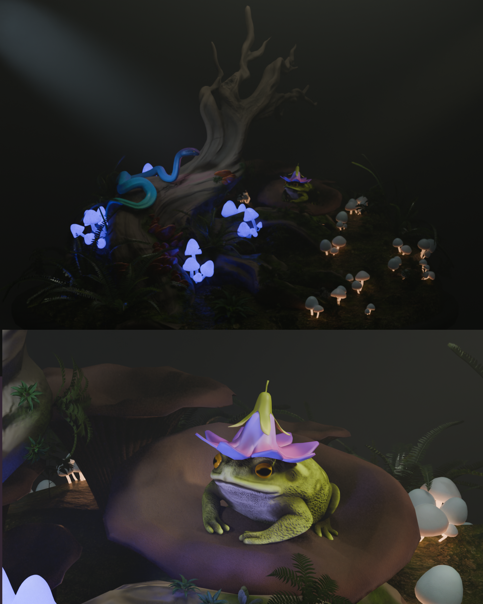

Hi, ich bin Nadiia -
eine 2D- und 3D-Designerin
Ich komme aus der Ukraine und lebe derzeit in Deutschland, wo ich Medieninformatik an der Hochschule Flensburg studiere. Aktuell suche ich ein Praktikum.
Ich arbeite mit Programmen wie Blender, ZBrush, Adobe Photoshop/Affinity Photo, Affinity Designer und Unity und habe außerdem Grundkenntnisse in den Programmiersprachen Java, Python, C# sowie HTML/CSS.
Besonders interessiert mich die Gestaltung von Charakteren und das Erzählen von Geschichten durch visuelles Design. Gleichzeitig bin ich offen für neue Ideen, experimentiere gerne und lerne schnell, sodass ich mich gut an neue Herausforderungen anpassen kann.



Stilisierte 3D-Modelle
Beispiele für stilisierte Props und Charaktere, erstellt in Blender und ZBrush.


Entwicklung eigener Charakterkonzepte für Spiele, Comics und persönliche Projekte.
Ich erstelle sowohl kommerzielle als auch auftragsbasierte Arbeiten - von ersten Ideenskizzen bis hin zu vollständig ausgearbeiteten Character Sheets.


Kurze Comics, die auf persönlichen Erfahrungen, gesellschaftlichen Themen und eigenen Fantasy-Geschichten basieren.
Dabei nutze ich visuelles Storytelling, um Emotionen, reale Themen und imaginative Welten zu verbinden und daraus einzigartige Erzählungen zu entwickeln.